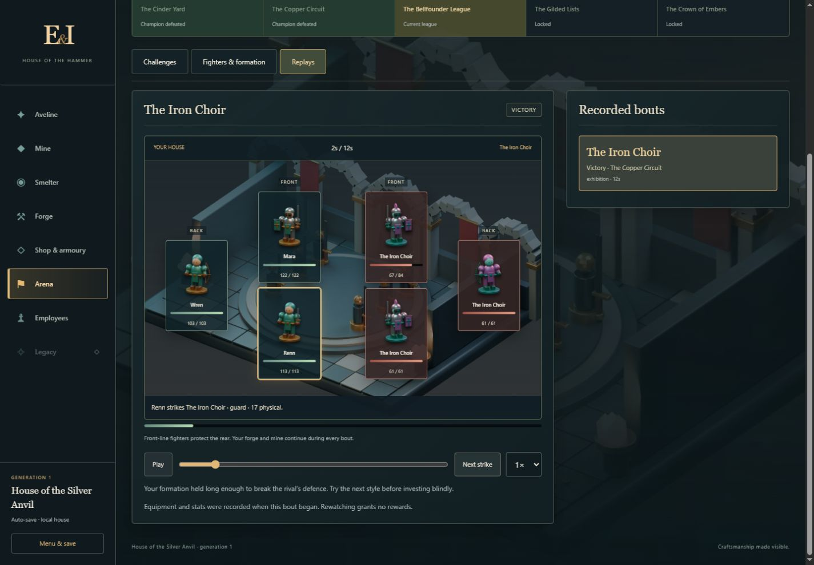

Smith
Calling, working vow, experience and uncapped attributes. Each attribute previews the next point's effect. Class mastery is prominent; permanent furnishings and the house chronicle sit alongside progression.
A smithing RPG built around a visible consequence: the equipment you make keeps your fighters standing. Mining, metallurgy and repeat orders finance the next answer to a rival.
Long campaign update: Legacy now stays hidden until at least 72 credited hours and the fifth champion. New discoveries, permanent studies, sixty Crucible trials and inherited equipment families extend the game across generations. Read the current pacing guide and explore all forty backgrounds →
Gold funds room development. Materials extracted, contracts fulfilled and matches won establish access; those records are never spent. Ranks grow exponentially. A dependable contract counter supports the competitive team, while mastery makes familiar patterns useful even after a new material opens.
The persistent goal points to the next milestone. A rival's crafting response can be pinned across rooms. Each first-visit introduction explains the room's purpose and its place in this chain; the question-mark button reopens it.
Calling, working vow, experience and uncapped attributes. Each attribute previews the next point's effect. Class mastery is prominent; permanent furnishings and the house chronicle sit alongside progression.
Coal first, then opened seams and the next licence. Assign miners individually, help a cart, sell raw stock or buy leather, wood and oil. Full assigned bins redirect a crew; excess delivered materials are lost. Depth, Workers and Storage develop separately.
Alloy recipes disclose inputs, batch time, yield and storage. An on-duty Assayer prepares toughened or spring-tempered metal. Set ingot targets after earning a stockkeeper; higher alloys can request their intermediates.
Choose Team, Catalogue or Practice intent; then class, material, pattern, treatment and enchantment. Batch controls use actual affordable quantities. Finishing works on queued and active pieces. The next standard pattern explains missing gates and mastery XP.
Three focused tabs: free team equipment comparisons, disclosed contracts, and displays with a compact warehouse. Town visitors buy spare work. Team commissions are protected, and replaced gear returns safely to storage.
Current league and qualification, rival tactics, team formation and a deliberate launch button. The roster shows final combat stats, XP, compatible item classes and equipped pieces. Replays explain outcomes while the workshop continues.
Mine, Smelter, Forge and Shop specialists have names, experience, stamina and visible current contributions. Manual leave restores effectiveness. Training, Welfare and Organization contain twelve upgrades, including managed shifts.
A separate ceremonial hall, hidden until at least seventy-two credited hours and the fifth champion. Four talent branches, three inheritance charters and a clear retirement review. Sparks, permanent talents, furnishings, the chronicle and a chosen stored heirloom survive.
Desktop uses a room workspace and context column. Phones use one column and a persistent room bar. Backgrounds dim during a room change; labels and controls remain sharp. Each room has five architectural stages. Local development changes its scene quietly, with grander rooms reserved for later generations and research.
All attributes start at zero. Allocate twenty points; optional calling spreads are suggestions. Origins provide modest starting supplies or gold. A working vow adds a benefit and a trade-off: patience, industry, generosity or independence.
| Calling | Distinctive method | Longer-term trait |
|---|---|---|
| Oathblade | +6 weapon quality; 10% faster work. | Keen treatment is free on mastered weapons at class mastery 12. |
| Bastion smith | +10 heavy-item quality; faster finishing on defensive equipment. | Reinforced treatment becomes free at mastery 12. |
| Cinderwright | +20% mastery XP and enchantment strength; immediate Warding access. | Warding becomes free at mastery 12. |
| Deep delver | Faster mining and an extra material from manual help. | A discounted first extra miner and larger surveyed pockets. |
| Guild factor | Better prices, cheaper hires and stronger contract payments. | Four visible contracts; a modest opening advance unless independent. |
| Clockwork founder | Faster smelting and employee learning. | Starts with the ingot stockkeeper, enabling an earlier idle workshop. |
| Archive keeper | More mastery XP and a small quality bonus. | Starts with Guild patterns; deliberate Practice gives extra mastery XP. |
Every calling uses the same campaign; none excludes an item class permanently. Fighters have authored identities. The opening trio is Mara, Renn and Wren.
There are seventeen item classes, three ordinary patterns per material tier and class, plus rare and legendary Legacy patterns. Training is cheap and accessible; standard work is a useful step up; prestige asks much more of the smith. The next-pattern guide follows training and standard patterns so a demanding prestige design does not obscure the next material.
Toughened metal adds health and armour but slows weapon swings. Spring temper adds attack and evasion but reduces item armour. Keen, Reinforced and Warding treatments offer predictable properties; natural crafting prefixes remain visible when present. Enchanting adds a suffix.
Successive finishing passes add +20, +10, +5, +2 and +1 quality, bounded by the current ceiling. Each adds a normal craft duration, adjusted by finishing traits. Natural prefix chances improve with diminishing returns. Cancelling returns the exact reserved inputs, grades and preparation fees when bins can hold the full refund.
Only classes your unlocked fighters can use appear in the catalogue. New item quality descriptors extend through the higher ceilings. Team stock is protected automatically; releasing it for trade is an explicit decision.
The Iron Choir tests sustained damage against a shield wall. The Red Thread tests whether your line can survive fast blades. The Glass Lantern tests elemental protection. Each match counts once, irrespective of party size. A fighter cannot reach the rear until the opposing front is broken. Recovery is short after victory and longer after defeat; gear is never lost.
Champion style is fixed by league. Exhibitions against beaten opponents pay a modest purse without adding qualification. Automatic repetition stops on defeat. The fifth championship opens Legacy, whose base reward grows with contract and hallmark achievements rather than trivial first-tier farming.

Assign crews, choose ingot targets, select one catalogue recipe, set input reserves and optionally authorise supply buying. The clerk delivers complete contracts. Catalogue work stops when no matching demand exists, quality is insufficient, inputs are reserved or output storage is full.
Offline supply purchases share a session budget and keep twenty gold in reserve. Zero means no buying while away. Offline progress is capped at twenty-four hours per absence, cumulatively across reloads. Rotating catalogue production can follow eligible contracts automatically. A return summary reports output, contracts, money, fights and the current blocker. No policy launches a champion or spends upgrades for you.
These measurements predate the long campaign retune. Current earned campaigns, fixes and known balance limits are recorded in the 3.1 review.
| Earned milestone | Simulated time | What it establishes |
|---|---|---|
| First three contracts | 1.9 / 5.1 / 8.5 minutes | A workable opening income source. |
| First champion attempt | 46.5 minutes | The basic team loses but can afford improvements. |
| First champion victory | 55.9 minutes | Attributes, Guild patterns, a grinder, a doctrine and three standard weapons change the outcome. |
| First iron production | 56.7 minutes | The reward opens a viable material route. |
| First iron sword equipped | 91.3 minutes | Class mastery becomes the next significant commitment. |
This independent run used ordinary game commands without granting resources, levels or equipment. It is one informed policy. Separate controlled fixtures confirm all 255 ordinary patterns can be reached, a prepared final-tier team can win the last champion, and all three Legacy charters preserve valid ownership and saves.
The clearest remaining balance question is the 34.6-minute interval between opening iron production and making the first iron sword. The UI now exposes the mastery XP still required. Full earned campaign affordability, long unattended economies and second-generation timing are not yet established by these opening results.
The review found and fixed fractional match deadlines invalidating saves, stale premium-ingot credits after sale, incorrect batch maxima, concurrent smelt-overflow attribution, lost recipe access on conversion, and swaps ignoring reserved craft storage. All 224 automated checks pass, including the separate Classic regression suite. The late code review also corrected duplicate commercial price multipliers and made reputation a concrete gate for patron development.
The shared simulation still has historical inheritance layers. Rewriting that tested foundation in one release would put production and migration at unnecessary risk; House rules now sit behind a distinct module. A later cleanup can extract material ledgers, staff and crafting into composable services with the present regression suite as the contract.
This release has an authored local rival ladder. It does not claim online matchmaking or friend-team exchange. Procedural crowd commentary, moving workshop characters and more detailed logistics remain optional future work from the original proposal. The current backgrounds, miniature fighters, controls and overlays are actual shipped art and interface.
Original interactive design atlasFull original proposalDevelopment and reproducibility